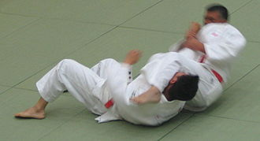

Judo (jūdō, Japanese pronunciation, lit. "gentle way") is generally categorized as a modern martial art, which has since evolved into a combat and Olympic sport. The sport was created in 1882 by Jigoro Kano as a physical, mental, and moral pedagogy in Japan. With its origins coming from jujutsu, judo's most prominent feature is its competitive element, where the objective is to either throw or take down an opponent to the ground, immobilize or otherwise subdue an opponent with a pin, or force an opponent to submit with a joint lock or a choke. Strikes and thrusts by hands and feet as well as weapons defences are a part of judo, but only in pre-arranged forms (kata,) and are not allowed in judo competition or free practice (randori). It was also referred to as Kanō Jiu-Jitsu until the introduction to the Olympic Games. A judo practitioner is called a "judoka", and the judo uniform is called "judogi". The philosophy and subsequent pedagogy developed for judo became the model for other modern Japanese martial arts that developed from koryū (traditional schools). Judo also spawned a number of derivative martial arts across the world, such as Brazilian jiu-jitsu, Krav Maga, Sambo and ARB.
History and philosophy
The early history of judo is inseparable from its founder, Japanese polymath and educator Kanō Jigorō (Jigoro Kano, 1860–1938), born Shinnosuke Jigorō ( Jigorō Shinnosuke). Kano was born into a relatively affluent family. His father, Jirosaku, was the second son of the head priest of the Shinto Hiyoshi shrine in Shiga Prefecture. He married Sadako Kano, daughter of the owner of Kiku-Masamune sake brewing company and was adopted by the family, changing his name to Kano. He ultimately became an official in the Shogunal government. Jigoro Kano had an academic upbringing and, from the age of seven, he studied English, shodō ( Japanese calligraphy) and the Four Confucian Texts ( Shisho) under a number of tutors. When he was fourteen, Kano began boarding at an English-medium school, Ikuei-Gijuku in Shiba, Tokyo. The culture of bullying endemic at this school was the catalyst that caused Kano to seek out a Jūjutsu ( Jujutsu) dōjō ( dōjō, training place) at which to train. Early attempts to find a jujutsu teacher who was willing to take him on met with little success. With the fall of the Tokugawa shogunate in the Meiji Restoration of 1868, jujutsu had become unfashionable in an increasingly westernized Japan. Many of those who had once taught the art had been forced out of teaching or become so disillusioned with it that they had simply given up. Nakai Umenari, an acquaintance of Kanō's father and a former soldier, agreed to show him kata, but not to teach him. The caretaker of Jirosaku's second house, Katagiri Ryuji, also knew jujutsu, but would not teach it as he believed it was no longer of practical use. Another frequent visitor, Imai Genshiro of Kyūshin-ryū school of jujutsu, also refused. Several years passed before he finally found a willing teacher. In 1877, as a student at the Tokyo-Kaisei school (soon to become part of the newly founded Tokyo Imperial University), Kano learned that many jujutsu teachers had been forced to pursue alternative careers, frequently opening Seikotsu-in ( traditional osteopathy practices).[6] After inquiring at a number of these, Kano was referred to Fukuda Hachinosuke (c.1828–1880), a teacher of the Tenjin Shin'yō-ryū of jujutsu, who had a small nine mat dōjō where he taught five students. Fukuda is said to have emphasized technique over formal exercise, sowing the seeds of Kano's emphasis on randori (, randori, free practice) in judo. On Fukuda's death in 1880, Kano, who had become his keenest and most able student in both randori and kata ( kata, pre-arranged forms), was given the densho ( scrolls) of the Fukuda dōjō. Kano chose to continue his studies at another Tenjin Shin'yō-ryū school, that of Iso Masatomo (c.1820–1881). Iso placed more emphasis on the practice of "kata", and entrusted randori instruction to assistants, increasingly to Kano.[10] Iso died in June 1881 and Kano went on to study at the dōjō of Iikubo Tsunetoshi (1835–1889) of Kitō-ryū . Like Fukuda, Iikubo placed much emphasis on randori, with Kitō-ryū having a greater focus on nage-waza ( throwing techniques).
Judo waza (techniques)
here are three basic categories of waza ( techniques) in judo: nage-waza ( throwing techniques), katame-waza ( grappling techniques) and atemi-waza ( striking techniques). Judo is mostly known for nage-waza and katame-waza. Judo practitioners typically devote a portion of each practice session to ukemi ( break-falls), in order that nage-waza can be practiced without significant risk of injury. Several distinct types of ukemi exist, including ushiro ukemi ( rear breakfalls); yoko ukemi ( side breakfalls); mae ukemi ( front breakfalls); and zenpo kaiten ukemi ( rolling breakfalls). The person who performs a Waza is known as tori ( literally "taker") and the person to whom it is performed is known as uke ("receiver").
Nage-waza (throwing techniques)
Nage-waza include all techniques in which tori attempts to throw or trip uke, usually with the aim of placing uke on his back. Each technique has three distinct stages:
*Kuzushi , the initial balance break;
*Tsukuri , the act of turning in and fitting into the throw;
*Kake , the execution and completion of the throw.
Nage-waza are typically drilled by the use of uchi-komi , repeated turning-in, taking the throw up to the point of kake.
Traditionally, nage-waza are further categorised into tachi-waza ( standing techniques), throws that are performed with tori maintaining an upright position, and sutemi-waza ( sacrifice techniques), throws in which tori sacrifices his upright position in order to throw uke.
Tachi-waza are further subdivided into te-waza ( hand techniques)[29], in which tori predominantly uses his arms to throw uke; koshi-waza ( hip techniques) throws that predominantly use a lifting motion from the hips; and ashi-waza ( foot and leg techniques), throws in which tori predominantly utilises his legs.
Katame-waza (grappling techniques)
Katame-waza is further categorised into osaekomi-waza (holding techniques), in which tori traps and pins uke on his back on the floor; shime-waza ( strangulation techniques), in which tori attempts to force a submission by choking or strangling uke; and kansetsu-waza ( joint techniques), in which tori attempts to submit uke by painful manipulation of his joints. A related concept is that of ne-waza (prone techniques), in which waza are applied from a non-standing position. In competitive judo, Kansetsu-waza is currently limited to elbow joint manipulation. Manipulation and locking of other joints can be found in various kata, such as Katame-no-kata and Kodokan goshin jutsu.
